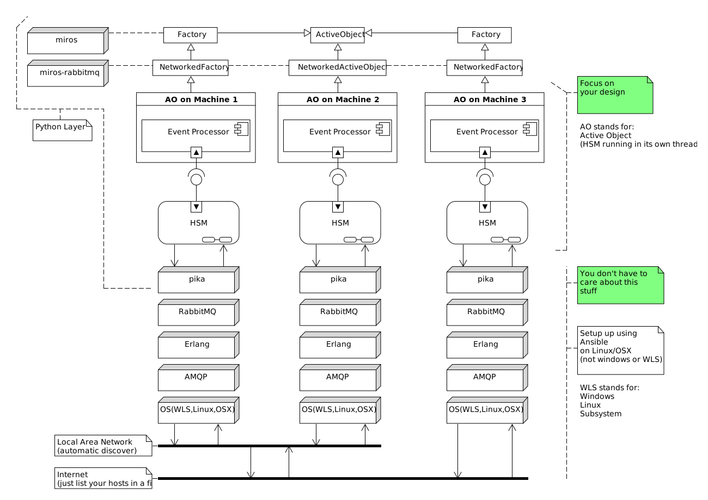

Introduction#
The destiny of computers is to become interactive intellectual amplifiers for all humans, pervasively networked world-wide.
—Joseph Carl Robnett Licklider
The miros-rabbitmq lets you network your miros statecharts. It provides encrypted channels of communication over which you can send Python objects. The miros-rabbitmq package tries very hard to hide a lot of the network complexity from you, so you can put all of your efforts toward your design instead.
By networking statecharts you can build distributed systems, IOT frameworks or Botnets.
To use the library:
Replace your miros ActiveObject class with a miros-rabbitmq NetworkedActiveObject class.
Replace your miros Factory class with a miros-rabbitmq NetworkedFactory class.
To transmit events between networked statecharts use the transmit method.
Debug/document your networked software using the snoop_trace and the snoop_spy.
Once you are happy with your software, you can build a deployment procedure so that you can install the required infrastructure, credentials and secrets on many different machines.
This document was intended to guide someone who already understands how to use the miros statechart Python package. If you don’t know anything about this, get a decent handle on the miros software first, then come back and learn how to network it.
Note
If at any time you would like to navigate back to the top level of the documents, click on the rabbit in the top left corner.
Note
If any of the documents are too small in your browser, click on them and you will see a full sized pdf version of the same image.
RabbitMQ is an open source networking library written in Erlang which supports the AMQP messaging protocol. Pika is a Python package that interfaces Python code with RabbitMQ. This miros-rabbitmq package uses pika to tie together miros statecharts across the network using AMQP.
You can see how everything fits together in the following architectural diagram:
The event processor and statechart features are provided by the miros package. The miros-rabbitmq package provides extensions to the Factory and ActiveObject classes, NetworkedFactory and NetworkedActiveObject. Your designs would inherit from these classes. The miros-rabbitmq package provides networking using pika which in turn relies on the RabbitMQ server installed on each computer. RabbitMQ is dependent upon the Erlang programming language and the AMQP messaging protocol, both of which are dependent upon your underlying operating system.
As mentioned miros-rabbitmq tries to remove a lot of the complexity of networking away from the statechart developer. Unfortunately, installing RabbitMQ is not trivial, and their documents are written as a collection of open secrets.
So, this guide, in addition to talking about miros-rabbitmq, will talk about installing the required infrastructure on both Linux (using automation) and Windows.